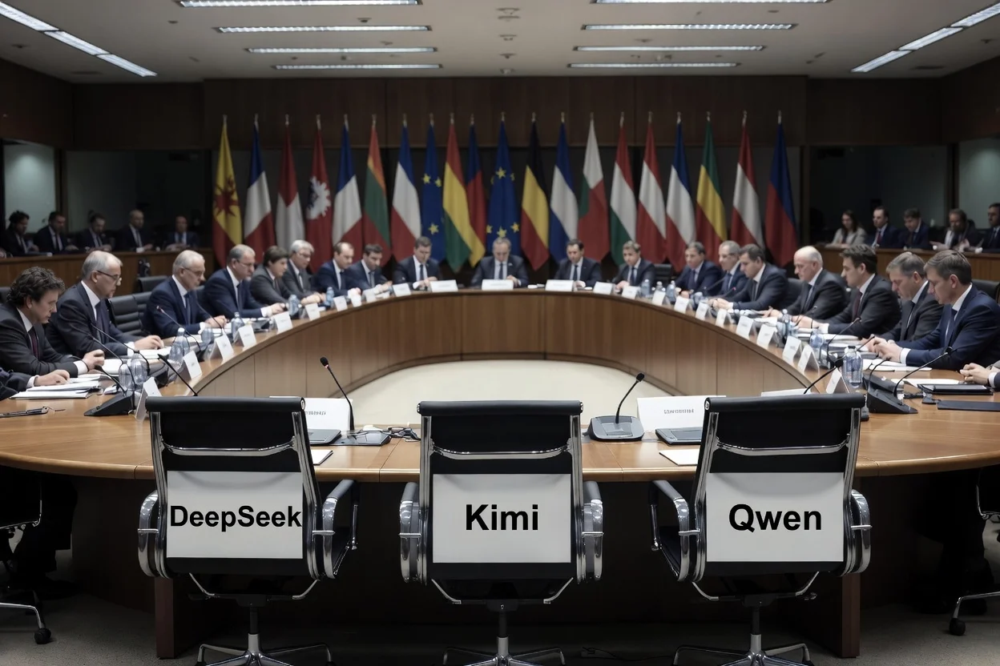

Twelve hours. That is how long the second political trilogue on the EU AI Act Omnibus lasted on April 28, 2026. When it ended without agreement, the institutions issued statements. Compliance teams updated their Slack channels. Law firms published client alerts by midnight.
Nobody called DeepSeek or MiniMax. Nobody called the teams maintaining the Llama and Qwen download pages on Hugging Face. They were not in the room. They never needed to be.
The AI Act’s original deadlines are now back in force. High-risk AI obligations — employment screening, credit scoring, biometric systems, law enforcement tools — apply from 2 August 2026 as written. A follow-up trilogue is scheduled for 13 May 2026, and a July publication in the Official Journal remains theoretically possible.[1] But five months of negotiation just collapsed over a single unresolved file, and any CTO or General Counsel who has been planning against an assumed delay should stop.
What Actually Failed
The Omnibus collapsed over Annex I — specifically, the conformity-assessment architecture for AI systems embedded in regulated products: industrial machinery, medical devices, and in-vitro diagnostics.[2] The European Parliament wanted AI Act requirements horizontally integrated into the sectoral safety laws governing those products. The Council did not converge on that approach. Twelve hours of negotiation produced no bridge.
This was not a minor procedural dispute. The conformity-assessment architecture determines who certifies what, under which framework, and inspected by which authority. The Standing Committee of European Doctors had already objected to medical devices being moved out of the AI Act’s high-risk framework and into sectoral-only oversight.[3] Sectoral regulators have their own conformity regimes. The Parliament’s proposal to shift AI medical devices into those regimes produced exactly the resistance that a proposal to weaken overlapping safety requirements tends to produce.
The package that failed included the high-risk deadline delay (Annex III systems to December 2, 2027; Annex I systems to August 2, 2028), the nudifier ban, and the reinstated registration requirement for self-assessed non-high-risk systems — a provision the Commission had tried to delete, and both institutions had independently restored.[4] All of it is now on hold until May 13 at the earliest, July at the latest, and August 2 if negotiations fail entirely.
Dutch MEP Kim van Sparrentak put it plainly: “Big Tech is probably popping champagne. While European companies that care about safety and did their homework now face regulatory chaos.”[5] She named the wrong beneficiary. Big Tech was never the problem the Omnibus was meant to solve.
Who Was Never at the Table
Here is what five months of Omnibus negotiations produced: an extended debate among European institutions, industry associations, and member states over how to make compliance easier for European deployers.
The actors who justified the controls were not party to that debate. They are not subject to it.
A US foundation model provider operating under contractual terms of service and API access restrictions faces AI Act obligations primarily at the GPAI layer — Chapter V, Articles 51 through 55, which govern general-purpose AI models. Those provisions entered into force on 2 August 2025 and were never part of the Omnibus dispute.[6] The high-risk deployer obligations that the Omnibus was trying to delay apply to the European companies that deploy those models in employment, credit, and public-safety contexts, not to the labs that built them.
A Chinese open-weight model distributed through Hugging Face, downloaded by a European startup, and deployed in a recruitment pipeline sits in a more ambiguous position. The AI Act claims jurisdiction twice: Article 2(1)(a) covers any provider placing a system on the EU market regardless of location; Article 2(1)(c) extends to any third-country provider whose outputs are used in the Union.[7] And the open-source exemption under Article 2(12) collapses when the system is deployed in a high-risk context, which EU recruitment is, under Annex III. But claiming jurisdiction and exercising it are different operations. Enforcement against a Chinese lab with no EU legal entity, no EU revenue recognition, and no EU contractual relationship is a different exercise from enforcement against a Frankfurt insurance company that bought an HR screening tool from a certified vendor. The Frankfurt company is in the registration database. The Chinese lab is not.
This is the governance paradox the Omnibus negotiations made visible. The five months of debate were about how to adjust rules for the population that was already complying. The population that justified the rules — and that the rules structurally struggle to reach — had no seat at the table because the table has no jurisdiction over them.
The more effective the governance mechanism for the governed, the sharper the line between the governed and the ungoverned. The Omnibus was trying to move the line. It collapsed before it could.
What August 2 Actually Means
Three things are in force regardless of what happens on May 13.
Article 4 AI literacy obligations have been in effect since 2 February 2025. Every provider and deployer must ensure that staff working with AI systems have sufficient AI literacy for their role. No prescribed curriculum; no direct administrative fine attached; liability exposure arises through the revised Product Liability Directive and national tort law when inadequate training contributes to harm.[8]
Article 50 transparency obligations apply from 2 August 2026 for new systems: disclose chatbot interactions, label AI-generated content in public-interest contexts, and mark synthetic audio and video. The watermarking sub-provision — the machine-readable component — is the one provision still genuinely in play at trilogue, with Parliament proposing November 2, 2026, and the Council proposing February 2, 2027.[9] Everything else in Article 50 lands on August 2 as written.
High-risk deployer obligations — conformity assessments, technical documentation, registration, human oversight mechanisms — apply from August 2 under the original law. If May 13 closes a deal and July publication clears, those obligations move to December 2, 2027. If not,they will go live in 94 days. Building a governance architecture that can absorb either outcome is not a delay strategy. It is the only strategy that works in both scenarios.
What May 13 Changes and What It Doesn’t
A deal on May 13 delivers the delay. Compliance teams gain twelve months on Annex III high-risk obligations. Any CTO managing a Q3 sprint against August 2 would welcome that.
What it does not change: the conformity assessment dispute that sank April 28 had nothing to do with foundation model providers, open-weight distributors, or cross-border API operators. It was a dispute between European institutions about European products deployed in European markets. The labs that built the systems the framework was designed to constrain have faced GPAI obligations since August 2025, and enforcement mechanisms that are still being built.
May 13 will determine whether the governed get twelve more months. If it closes and the July publication clears, this piece’s urgency evaporates, but its structural argument does not. The delay arrives; the boundary does not move.
What does not change in either scenario:while the EU institutions were spending five months negotiating compliance architecture for companies that were already in the room, the companies that were never in the room kept building. DeepSeek, MiniMax, Kimi, and others have shipped new models. The open-weight frontier moved. Every month of trilogue is a month the rest of the world does not spend waiting for a conformity assessment framework to resolve. The Act governs the governed. The ungoverned are compounding.
Notes
[1]European Parliament Legislative Train Schedule, Digital Omnibus on AI, updated April 29, 2026.
[2]IAPP, “EU AI Act reform talks stall as key compliance deadline looms,”April 29, 2026. Cypriot Council Presidency official statement: “It was not possible to reach an agreement with the European Parliament.” MLex Chief AI Correspondent Luca Bertuzzi confirmed the specific sticking point: “talks broke down around 2 am, with the expected fault line on the European Parliament’s push to move sectoral legislation from Annex I Section A to B.” See alsoTNW, April 29, 2026.
[3]CPME, “’Move fast and break things’ must not endanger patient safety: Medical devices must remain under safeguards of the AI Act,”March 25, 2026.
[4]NicFab, “Digital Omnibus on AI: EP Adopts Position (569 Votes),”March 27, 2026. Both Parliament and Council reinstated the registration obligation after the Commission proposed deleting it;EDPB and EDPS Joint Opinion 1/2026supported reinstatement.
[5] Van Sparrentak quote viaIAPP citing Reuters, April 29, 2026.
[6]IAPP, “AI Act Omnibus: What just happened and what comes next?”, April 29, 2026.
[7]EU AI Act (Regulation (EU) 2024/1689), Article 2(1)(a) (providers placing systems on the EU market regardless of location), Article 2(1)(c) (third-country providers/deployers where outputs are used in the EU), and Article 2(12) (open-source exemption collapses for high-risk systems under Article 6(2) and Annex III).
[8]EU AI Act, Article 4(AI literacy), in force from 2 February 2025 per Article 113(a). The AI Act does not create a standalone civil liability cause of action; liability exposure for AI-related harm arises through therevised Product Liability Directive (Directive (EU) 2024/2853), transposition deadline 9 December 2026, and national tort law. The AI Liability Directive was formally withdrawn by the Commission in October 2025.
[9] CDT Europe AI Bulletin, April 2026;A&O Shearman trilogue analysis. Parliament proposes November 2, 2026 for watermarking; Council proposes February 2, 2027.